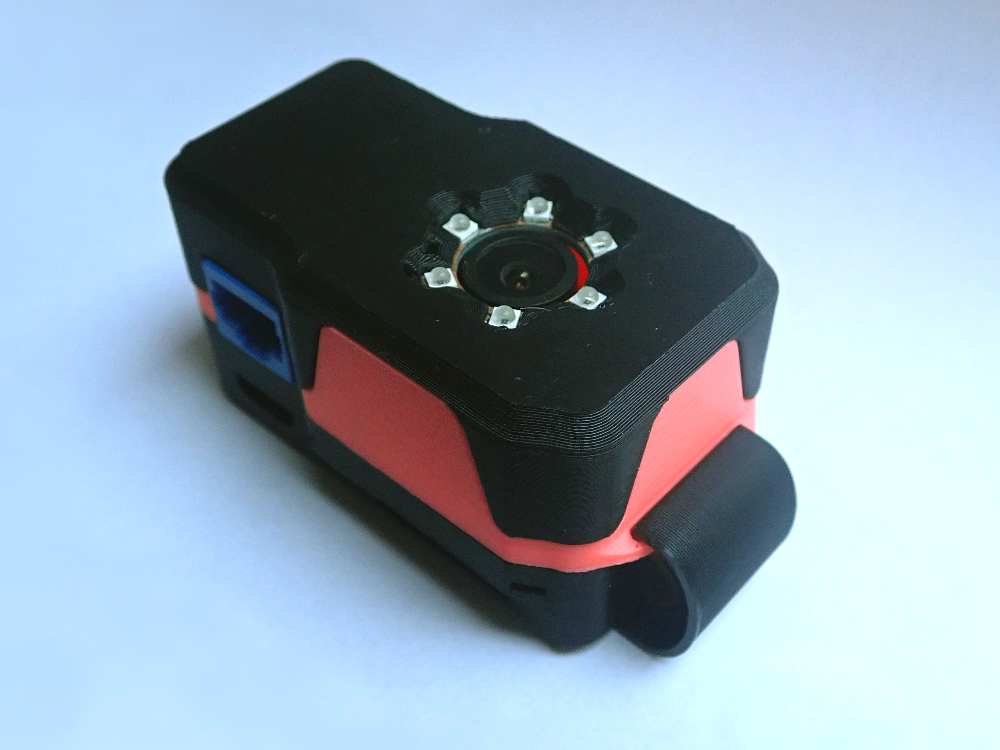
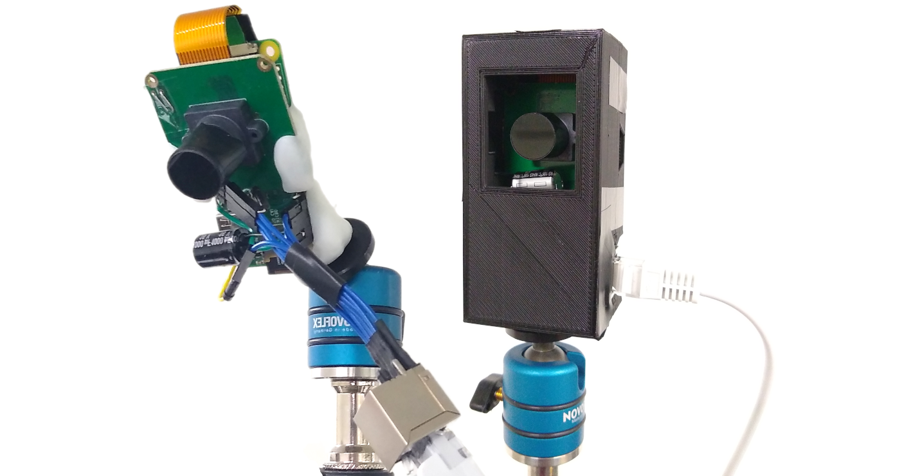
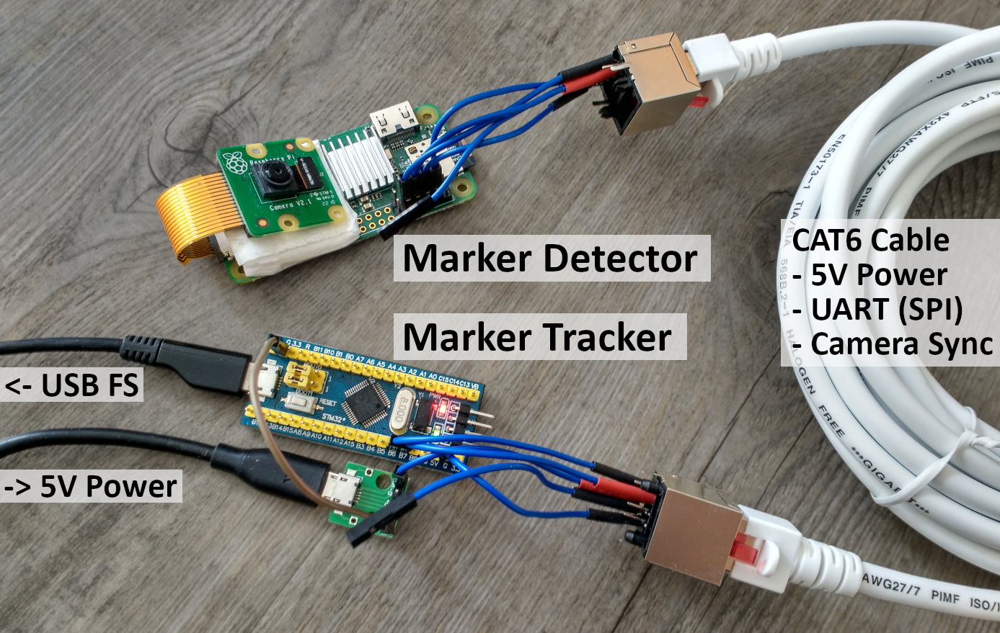

AsterTrack
An open source, open hardware implementation of mocap-grade optical tracking using accessible hardware!What is AsterTrack?
AsterTrack is a combination of custom hardware and complex software to track a set of markers in 3D space. This is known as optical (or opto-electronical) tracking and is used commonly for professional Motion Capture and high-end VR setups. These are commonly very expensive, but this projects aims to implement the same concept using much cheaper, but still capable hardware. It is composed of three components:- The Tracking Cameras - with onboard marker processing that make the tracking system viable in the first place
- The Tracking Controller - a microcontroller for camera synchronisation and communication with the host PC
- A Host with Configurator Software - this is the frontend for the user that performs the tracking and interfacing
How is this possible?
In order to keep the costs down, some of the cheapest components of their class are used. Key to the success is the processing hardware of the Tracking Cameras, without which all images would have to be processed on the host, which is infeasible at any meaningful quality and not scalable. The processing happens on a Raspberry Pi Zero, which is commonly considered the cheapest Single Board Computer (SBC) on the market. Using low-level assembly code on the QPU, a high throughput and low processing latency has been achieved. The cameras are global-shutter and externally synchronised, currently using the OV9281 sensor, for a base tracking rate of 120Hz, up to 200Hz.The Tracking Controller is very simple, but crucial to the low-latency communication between the Tracking Cameras and the host, and the synchronisation of the Tracking Cameras.
The rest of the magic happens on the host, with calibration being a huge challenge in past systems. Calibration currently requires only one marker to be waved around, and at least three Tracking Cameras. After that, any constellation of markers can be calibrated as a target for 6-DOF tracking.
Targets can be created by yourself, using retroreflective tape or infrared LEDs, as long as the constellation of markers is sufficiently unique. This can be used to track nearly anything with little to no intrusion.
All images are of prototypes in varying stages of development:

Recent Prototype Tracking Camera designed by JX35, with custom PCBs and support for passive markers

Early Prototype Tracking Cameras with simple electronics, with and without case
Early Target and Calibration Wand made from active markers (Infrared LEDs)

Very early prototype hardware, showing the Tracking Camera and Tracking Controller in an early state